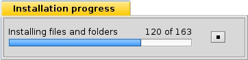

Français
Français Deutsch
Deutsch Italiano
Italiano Русский
Русский Español
Español Svenska
Svenska 日本語
日本語 Українська
Українська 中文 ［中文］
中文 ［中文］ Português
Português Suomi
Suomi Slovenčina
Slovenčina Magyar
Magyar Português (Brazil)
Português (Brazil) English
English PackageInstaller
PackageInstaller
| Deskbar : | Pas d'entrée : normalement, un double clic sur les fichiers pris en charge assure le lancement. | |
| Localisation : | /boot/system/apps/PackageInstaller | |
| Réglages : | aucun |
PackageInstaller est un logiciel pour installer les paquets BeOS au format PKG. Il fournit une interface graphique facile à utiliser pour une installation rapide des paquets dans Haiku.
Il est exécuté automatiquement lorsque vous essayez d'ouvrir des fichiers avec extension .Pkg.

La fenêtre principale donne accès à deux configurations :
- type d'installation (selon le développeur, il pourrait y avoir plusieurs options d'installations en plus de celle standard).
- Emplacement d'installation (Vous ne pouvez choisir que des partition ou des disques durs entiers, pas des chemins personnalisés)
Le processus d'extraction et d'installation débutera après avoir cliqué sur Install (Installer).
À ce point les avertissements et les erreurs peuvent apparaître pour vous indiquer les bibliothèques et les dépendances qui seraient manquantes pour exécuter le programme. Il pourrait être nécessaire d'installer ces paquets avant d'essayer d'installer le programme désiré.
Lorsque l'installation est terminée, le paquet devrait apparaître dans le menu des applications de la Deskbar.